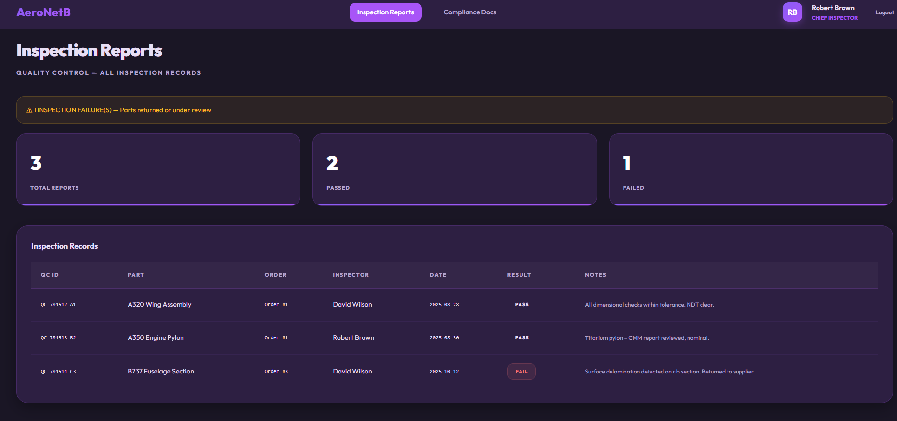
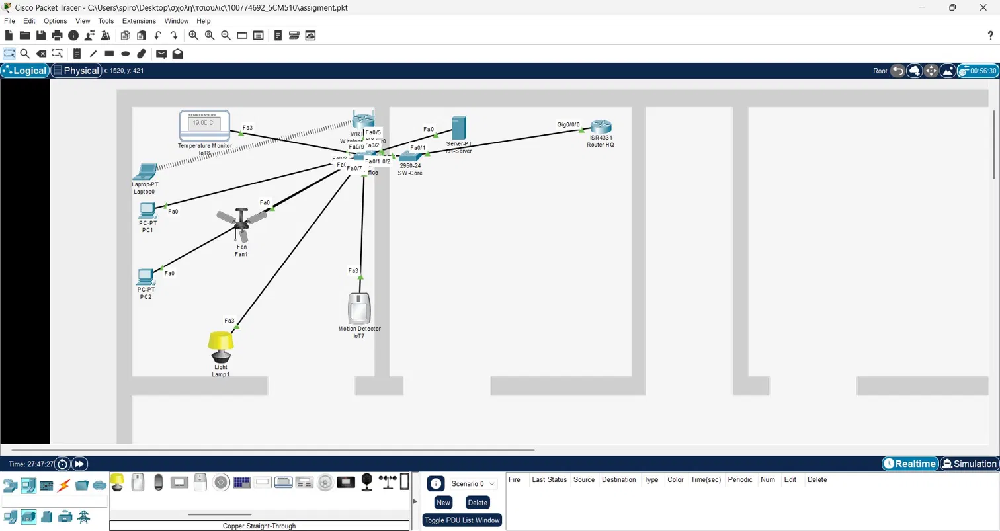
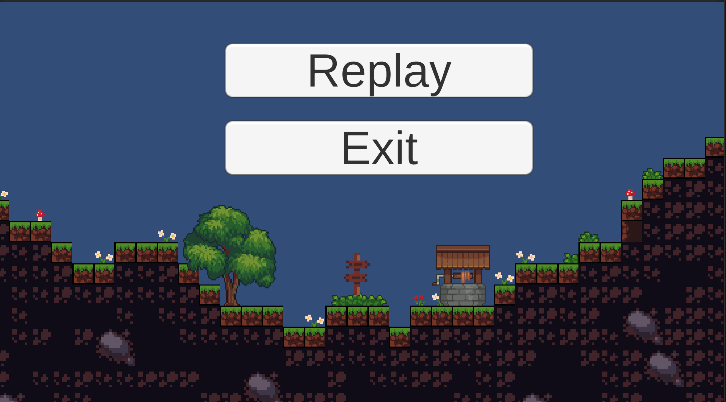

AeroNetB
A full-stack aerospace supply chain management application featuring procurement, shipment tracking, quality inspections, and role-based access.
Spiros Potamitis
Computer Science Student | Aspiring Full-Stack Developer
I enjoy developing interactive web applications, exploring new technologies, and transforming ideas into practical projects.

A full-stack aerospace supply chain management application featuring procurement, shipment tracking, quality inspections, and role-based access.

An IoT networking project using connected sensors and automated conditions to monitor and respond to environmental changes.

A 2D platformer developed in Unity, featuring character movement, enemies, platforms, and a level completion system.